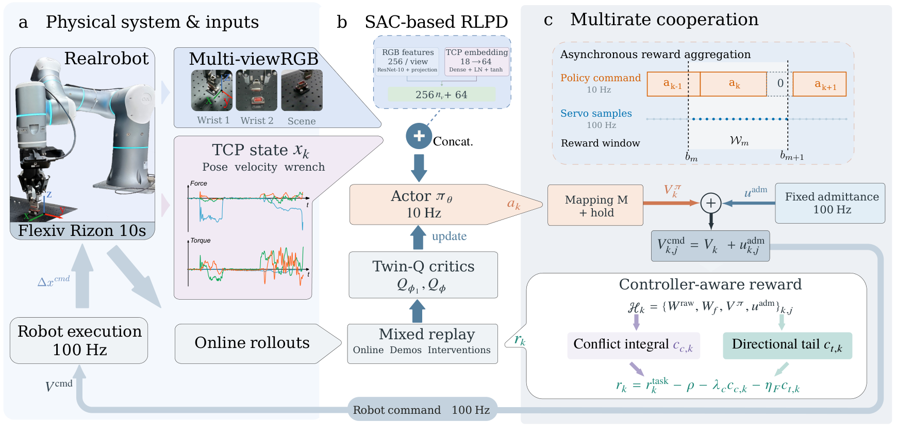
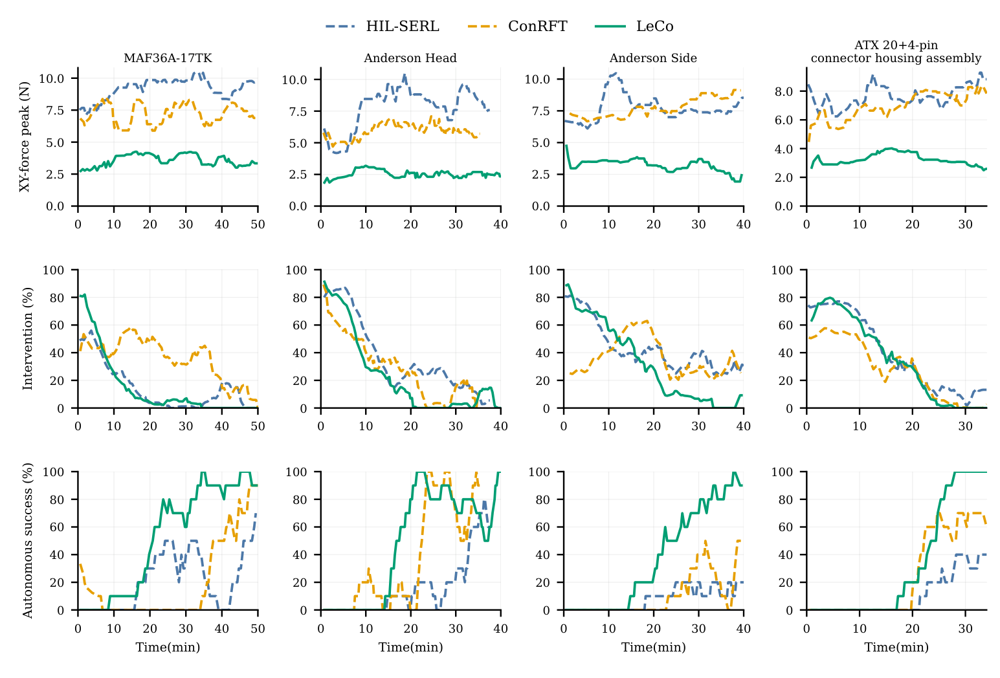

Multirate execution
The visual policy supplies task motion while fixed admittance continuously adjusts execution using wrench feedback.
LeCo · Leverage Compliance
A Policy–Admittance Learning Framework
for Robotic Insertion
School of Astronautics · National Key Laboratory of Aerospace Flight Dynamics
Northwestern Polytechnical University
Learning to work with compliance for effective insertion with reduced contact loads.
See the interaction
Explore the assembly tasks and their contact interaction over time.
Choose a video and the measurements from the same trial. Files stay in this browser.
CSV columns: time_s,fx,fy,fz,tx,ty,tz. Force in N; torque in N·m. An aligned time column can also be supplied with force_n,torque_nm.
Evaluation video pending
Early pose correction avoids jamming; axial motion completes final seating.
Video and synchronized force / torque recordings will be added for this task.
The idea
Policy learning and compliant control offer a promising route to reliable autonomous assembly under pose errors and contact uncertainty. However, combining them does not ensure coordination: the policy may continue pushing against contact while the controller yields, producing sustained loading with limited progress. To address this problem, we propose LeCo (Leverage Compliance), a policy–admittance learning framework that trains a visual policy to leverage fixed admittance for effective insertion with reduced contact loads. A multirate feedback mechanism aggregates high-rate contact-interaction records into policy-transition rewards. An integrated conflict cost then characterizes sustained policy-loading/controller-unloading opposition, while a directional high-force tail cost captures continued-loading events within a transition. Combined with a task-completion reward, these costs encourage the policy to leverage compliance with less unproductive loading. We evaluate LeCo on four real connector-assembly tasks, obtaining an aggregate success rate of 94%. Across tasks, mean successful-trial resultant-force and torque peaks decrease by approximately 30% and 64% relative to the comparison baseline. Reward ablation further shows that adding conflict shaping reduces median successful-trial contact-conditioned conflict density by approximately 53%. These results support integrating multirate policy–admittance execution with interaction-based reward shaping to achieve effective, lower-load insertion.
How it works
Task motion and compliant response contribute to a shared learning objective.

The visual policy supplies task motion while fixed admittance continuously adjusts execution using wrench feedback.
A conflict integral captures sustained command opposition. A directional tail cost captures brief high-force continued-loading events.
Real-robot evaluation
94 successful trials out of 100
across four assembly tasks
Across-task reduction in mean
successful-trial resultant-force peaks
Across-task reduction in mean
successful-trial resultant-torque peaks
Force and torque reductions are relative to ConRFT. These statistics describe the evaluation reported in the paper.
| Assembly task | Success | Force peak (N) | Torque peak (N·m) |
|---|---|---|---|
| Aviation connector | 19 / 20 | 7.760 ± 0.807 | 0.722 ± 0.147 |
| Anderson head | 30 / 30 | 6.188 ± 1.309 | 0.596 ± 0.172 |
| Anderson side | 17 / 20 | 7.379 ± 1.691 | 0.640 ± 0.151 |
| ATX 20+4-pin | 28 / 30 | 6.454 ± 0.929 | 0.483 ± 0.147 |
Peaks are three-axis resultant magnitudes, reported as mean ± sample standard deviation over successful trials.
